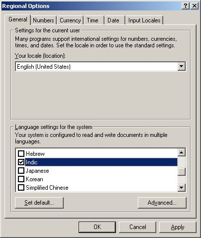
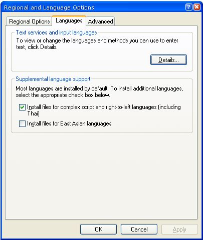

How to enable Unicode Tamil in Win 2000 and Win XP
How to Enable Tamil in Windows 2000?
You may need to have the Windows 2000 Installation CD for doing this.
From Start Menu, Open Settings >> Control Panel
In Control panel, Open "Regional Settings"
In that, in Language Settings for the system, many language groups can be clicked.
Search for "Indic" then Check this box near by "Indic".
And press OK That's all Now your Computer has Tamil support into it.
How to Enable Tamil in Windows XP?
If you are having Windows XP OS and are having problem viewing the Tamil fonts, then you have to enable Indic support. Doing so is quite simple, actually. Just follow the simple steps mentioned below.
keep your XP installation CD at hand.
Click Start > Control Panel.
Click Date, Time, Language, and Regional Options.
Now, click Regional and language Options.
In the Supplemental Language support, Check the "Install files for Complex Script and right to left languages (including Thai) ", and then click Apply.
If you hadn't yet inserted the Win XP installation CD into your CD-ROM drive, An alert will appear to ask you to insert the installation CD. Insert the CD and then click OK.
That's all... now your computer is enabled for Tamil Unicode.
Courtesy:www.ezilnila.com